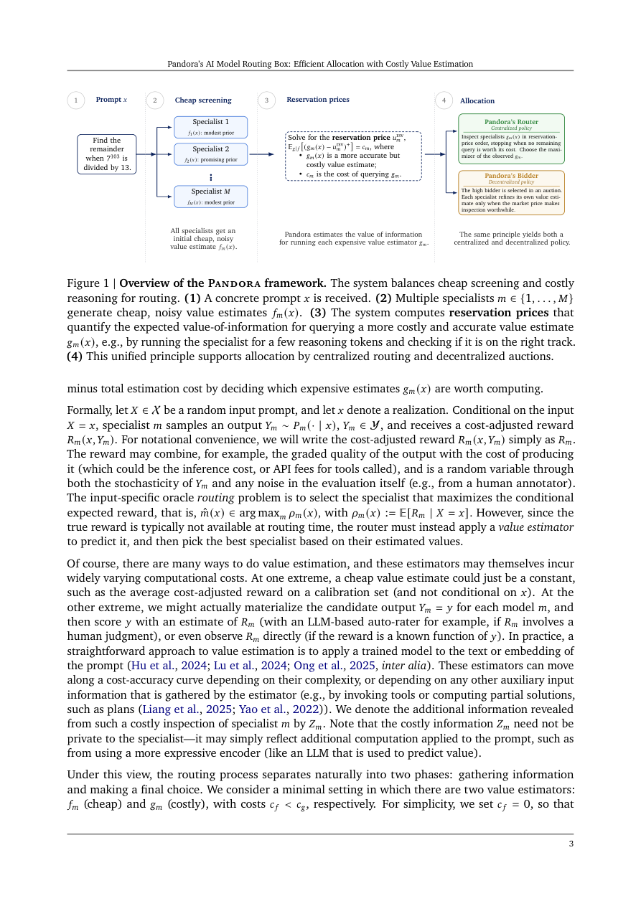

#1
★ 7/10
Pandora's AI Model Routing Box: Efficient Allocation with Costly Value Estimation
潘多拉的AI模型路由盒：昂贵价值估算下的高效分配

图 Figure · Page 3 of paper
🎯 智能路由器：按需付费评估，把查询分给最合适的AI专家
A smart router that decides when it's worth paying to better evaluate which AI specialist to use.
🗣️ 一句话比喻 · Plain-English Analogy就像医院分诊护士决定哪个病人需要做昂贵的MRI，哪个只需快速目测一样。大多数时候，快速判断就够了，只有真正拿不准时才下令做精密检查。潘多拉路由器对AI做的是同一件事：只在"多花钱真的会改变决定"时，才付费做深度评估。Think of it like a hospital triage nurse who decides which patients need an expensive MRI scan vs. a quick visual check. Most of the time, a quick look is enough to make the right call — you only order the costly scan when you're genuinely unsure. Pandora's Router does the same for AI: only pay for a deep evaluation when it would actually change the decision.
| 维度 | 中文 | English |
|---|---|---|
| ❓ 待解决 的问题 |
当你有很多不同的AI模型（专家）时，需要决定哪个模型来回答每个问题。判断谁最合适是有成本的——快速猜测便宜但不准确，仔细评估准确但又慢又贵。现有的路由系统要么花太多钱评估每个选项，要么因为图省事而做出糟糕的选择。 | When you have many different AI models (specialists), you need to decide which one should answer each question. Figuring out who is best costs time and money — a quick guess is cheap but often wrong, while a careful check is accurate but slow and expensive. Existing routing systems either spend too much checking every option or make poor choices by being too hasty. |
| 💡 解决 的亮点 |
• 将AI模型路由问题巧妙地建模为"潘多拉魔盒"经典数学问题——值不值得花钱开箱检查再做选择。• 推导出一个简洁的公式，精确告诉你什么时候该付费做精细评估、什么时候直接用初步判断就够了。• 将该思路扩展到去中心化"竞价"场景，让每个AI专家自主决定是否为自我评估投资，再参与查询竞争。 | • Frames AI model routing as "Pandora's Box" — a classic math problem about whether it's worth opening a box to see what's inside before choosing it. • Derives a clean formula that tells you exactly when to pay for a better estimate vs. just going with your gut. • Extends the idea to decentralized "bidding" where each AI specialist decides for itself whether to invest in self-assessment before competing for a query. |
| 🧪 实验 内容 |
实验在三个不同场景下进行：（1）标准多LLM路由基准测试（RouterBench），对比多个大型语言模型；（2）检索增强生成专家系统，其中检索本身有额外成本；（3）具有可变推理时间的LLM（如思维链推理）。基线包括：始终使用昂贵估算器、始终使用廉价估算器、以及随机路由。评估指标为路由质量（准确率/奖励）与估算成本节省之间的权衡。 | Experiments were run across three distinct domains: (1) a standard multi-LLM routing benchmark (RouterBench) comparing multiple large language models, (2) retrieval-augmented generation specialists where retrieval adds cost, and (3) LLMs with variable inference-time reasoning (like chain-of-thought). Baselines included always using the expensive estimator, always using the cheap estimator, and random routing. Evaluation measured routing quality (accuracy/reward) vs. estimation cost savings. |
| 📊 实验 结果 |
潘多拉路由器在三个基准测试中均达到与"穷举评估"（始终使用昂贵估算器）相当的路由质量，同时大幅减少了昂贵估算器的调用次数。在某些场景下，昂贵估算器的调用次数显著减少，而任务性能几乎没有损失。在去中心化设置中，当竞争估算准确时，价值信息推理提升了分配效率；但当估算噪声较大时，可能导致某个专家以牺牲他人利益为代价提升自身收益。三个基准测试均一致显示：在不显著降低质量的前提下实现了成本节省。 | Pandora's Router matched the routing quality of exhaustive (always-expensive) estimation while calling the expensive estimator far less frequently — in some settings reducing expensive estimator calls by a significant fraction while maintaining near-identical task performance. In the decentralized setting (Pandora's Bidder), value-of-information reasoning improved allocative efficiency when competing estimates were accurate, though it could increase one specialist's utility at others' expense when estimates were noisy. Specific numerical gains varied by domain but consistently showed cost savings without meaningful quality loss across all three benchmarks. |
| 🏁 结论 | 本文证明了无需对每个查询穷举评估所有AI专家——一个有原则的"值不值得检查"公式，就能以极低成本达到与完整评估路由相当的质量。文章基于经典决策理论，同时提出了集中式和去中心化的智能路由策略。 | This paper proves that you don't need to exhaustively evaluate every AI specialist for every query — a principled "is it worth checking?" formula can match full-evaluation routing quality at a fraction of the cost. It introduces both a centralized and decentralized version of this smart routing strategy, grounded in classical decision theory. |
| 🔗 论文 链接 |
arXiv: 2608.20316v1 · 📥 PDF | |
⚙️ Method · 方法详解
作者将AI路由问题与经济学中的经典难题"潘多拉魔盒"相连接：想象有一排盒子里装着未知奖品，你可以花钱看里面，但值不值得？他们将这个逻辑用于AI路由：先用便宜的粗略估计初步判断每个专家的能力，再用一个基于高斯噪声模型推导出的数学公式，判断花钱做精细评估是否真的会改变最终路由决策。如果粗略估计已经足够确定，就跳过昂贵的检查。他们还设计了去中心化版本，每个专家自主判断"自我宣传"（即投资于自我评估）是否划算，再参与任务竞价。
The authors connect AI routing to a classic economics puzzle called "Pandora's Box": imagine boxes with unknown prizes — you can peek inside by paying a fee, but is it worth it? They apply this logic to AI: start with a cheap, rough estimate of how well each specialist will do. Then, use a mathematical formula (derived from information value theory under a Gaussian noise model) to decide if paying for a more accurate estimate will actually change the routing decision. If the noisy estimate is already decisive, skip the expensive check. They also build a decentralized version where each specialist privately calculates whether self-promotion (i.e., investing in its own evaluation) is worth the cost before bidding for a task.
📐 Key Formulas · 关键公式
\[\text{VoI}_i = \mathbb{E}\left[\max(\mu_i + \sigma_i Z, v^*) \right] - \max(\mu_i, v^*) - c_i\]
💡 信息价值（VoI）：精细评估第i个专家所带来的预期收益，减去不评估的基础收益，再减去评估成本。若VoI > 0，则值得花钱评估。
Value of Information (VoI): the expected gain from refining the estimate for specialist i, minus the baseline (no refinement), minus the cost. If this is positive, it's worth paying for a better estimate.
\[\text{Pandora's Rule: inspect } i \text{ if } \sigma_i^2 / (2c_i) \geq \Phi^{-1}\left(\frac{v^* - \mu_i}{\sigma_i}\right)\]
💡 潘多拉规则：当专家i的估计不确定性足够大、评估成本足够低、且当前最优门槛与初步估计接近时，才值得投资做精细评估。
Pandora's Rule: inspect specialist i only when the uncertainty in its estimate is large enough relative to the cost and the gap from the current best option — a precise condition for when deeper evaluation pays off.
🌟 Why It Matters · 为什么重要
随着AI系统越来越多地依赖一批专业模型协同工作，高效路由对于控制成本、保持质量至关重要。这项工作提供了一种有原则、有数学依据的权衡方式，有望在真实AI部署中节省大量算力开销。
As AI systems increasingly rely on fleets of specialized models, efficient routing is critical for keeping costs manageable without sacrificing quality. This work provides a principled, mathematically grounded way to make that tradeoff — potentially saving significant compute costs in real-world AI deployments.